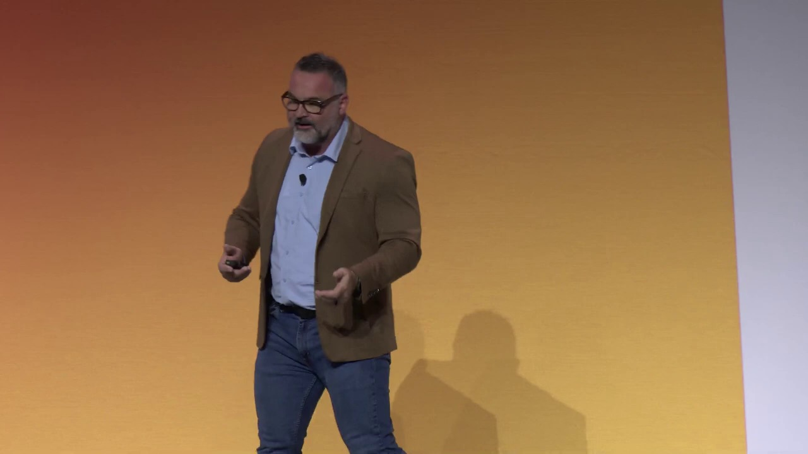
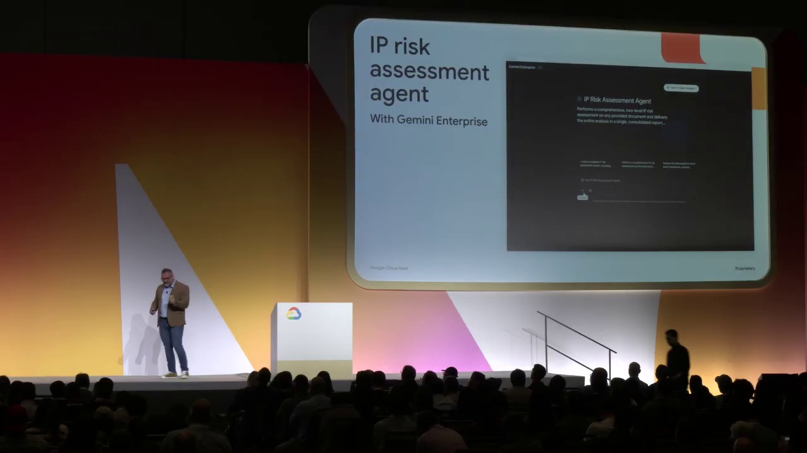
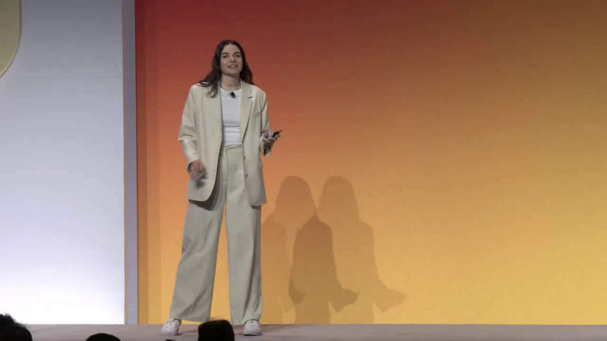

Key Moments





Summary & Script
What's new with Gemini Enterprise app
Source: https://www.youtube.com/watch?v=Tc3IiGNmXHc
Video ID: Tc3IiGNmXHc
Overview
The session, presented by Jamie Deggeer and joined by engineering lead Dave Teggart plus customers from KPMG and Signal Iduna, details the latest advancements in Gemini Enterprise—Google Cloud’s AI platform for the workplace. It introduces the new Gemini Enterprise Agent platform, explains how the solution integrates with Workspace and other tools, and demonstrates real‑world use cases such as loan‑processing automation. The talk emphasizes a shift from ad‑hoc AI chat to persistent, governed agents that operate on behalf of employees across the enterprise.
New Features & Announcements
Gemini Enterprise Agent platform — The underlying, cloud‑first, enterprise‑grade platform that unifies Vertex AI models, data connectors, and governance capabilities.
Availability: General Availability (core services) with additional components in preview.No‑code Agent Designer — Visual builder that lets non‑technical users create agents, define guardrails, and set operational policies without writing code.
Inbox — Centralized view for each employee to monitor background agents, receive notifications, and respond from preferred channels (mobile, Slack, email, etc.).
Skills & Canvas – Personalizable “skills” let users codify repeatable procedures; Canvas enables creation of documents, presentations, and other artifacts directly from agent outputs.
Projects – Shared workspaces with persistent context and conversation history where humans and digital agents collaborate.
Agent Gateway & Identity Service – New services for secure, scalable agent management and authentication (GA).
Integrations – Over 50 first‑party connectors plus the ability to add custom connectors via MCP servers, extending AI access to enterprise systems such as ServiceNow, Slack, and Microsoft 365.
Topics Covered
Introduction to Gemini Enterprise – Launched Oct 2023; serves as the “front door” to AI, offering a team of agents that can read/write enterprise data and act in core systems.
Customer Success Stories –
Anaplan: 80 % employee adoption, thousands of no‑code agents.
Macquarie Bank: 40 % increase in self‑service, agents handling fraud prevention, recommendations, etc.Architecture of the Agent Platform – Combines Vertex AI model access (Google, Anthropic Claude, open‑source) with grounding tools, a new registry, skill/agent catalogs, and DeepMind‑driven quality‑at‑scale innovations.
Application Layer Enhancements – Described how the Gemini Enterprise app surfaces agents, manages connectors, personalizes data ranking, and delivers experiences across web, mobile, Slack, and Workspace.
Demo: Loan‑Processing Automation – Showcased a long‑running, sandboxed agent that pulls mortgage applications, validates documents, runs compliance checks, creates ServiceNow incidents, and generates summary reports and slide decks via Canvas.
Operational Guardrails – Demonstrated pairing a full‑code, long‑running agent with a no‑code guardrail layer to enforce policy, schedule runs, and capture human‑review signals for continuous improvement.
Collaboration Features – Inbox, Projects, and Skills enable teams to share agents, view histories, and collaborate with both humans and AI co‑workers in a single workspace.
Future Directions – Hint at upcoming extensions, additional integrations, and further governance tools to be announced after the event.
Key Takeaways
- Gemini Enterprise is now supported by a robust Agent platform that centralizes model access, data grounding, and governance.
- No‑code tools empower business users to create and control agents while retaining enterprise‑grade security and policy enforcement.
- Persistent agents shift work from “point‑in‑time chat” to continuous background assistance, surfacing results only when needed.
- Integrated Inbox, Projects, and Skills provide a unified collaboration surface across Google Workspace, Slack, and other productivity suites.
- Real‑world demos prove that complex, regulated processes (e.g., loan approval) can be end‑to‑end automated, with human‑in‑the‑loop safeguards and automatic incident creation.
- Early adopters report high adoption rates and measurable efficiency gains, confirming the platform’s enterprise relevance.
Notable Quotes
- “From day one Gemini Enterprise has been built to be cloud first and enterprise grade.”
- “We’re moving from a world where employees chat with an AI assistant to a world where a team of agents works in the background for them.”
- “The no‑code agent designer lets you combine long‑running agents with guardrails so outcomes are deterministic for each scenario.”
- “With Inbox, every employee gets a single view of all their agents, notifications, and can interact via the channel of their choice.”
- “Our customers like Anaplan have 80 % employee adoption, showing the real‑world appetite for AI‑driven workflows.”
Podcast Script
JORDAN: Welcome to Episode 12 of SlackCasts by PodSlacker — where AI does the watching so you can do the listening. If you want a richer experience with today's episode, visit PodSlacker dot com slash SlackCasts — you'll find a written summary, key frame moments from the video, and an interactive AI chat to explore the topic as deep as you like. Now let's get into it.
MIKE: Jamie Deggeer opened the session by positioning Gemini Enterprise as the “front door” to AI in the workplace, launched back in October, and already seeing cross‑industry traction. It’s not just a chatbot; it’s a team of agents that can read, write, and act on enterprise data.
JORDAN: Exactly. The core breakthrough is the Gemini Enterprise Agent platform, which unifies Vertex AI model access—including Google models, Anthropic Claude, and open‑source options—with a data‑grounding layer, system connectors, and a suite of governance services like the Agent Gateway and Identity Service, all GA today.
MIKE: From a strategic standpoint, that means you get a single, cloud‑first, enterprise‑grade surface for any AI workload, rather than cobbling together disparate services. It’s the “one‑stop shop” for LLMs and the policies that keep them compliant.
JORDAN: The platform also introduces a new Agent Registry, Skill and Canvas registries, and DeepMind‑driven quality‑at‑scale tooling. Those components let you version agents, catalog reusable skills, and automatically improve outputs over time based on human‑in‑the‑loop signals.
MIKE: Which dovetails nicely with the no‑code Agent Designer. Business users can now compose agents visually, set operational guardrails, and define policies without writing a line of code. That’s a huge shift for adoption curves.
JORDAN: And the guardrails aren’t after‑thoughts; they’re baked in. The no‑code layer sits on top of a long‑running full‑code sandbox agent, letting you enforce deterministic outcomes, schedule runs, and capture review signals for continuous improvement.
MIKE: Let’s talk about the employee experience. The new Inbox aggregates every background agent, notification, and interaction point. Users can pick their delivery channel—mobile, Slack, email—so the AI surfaces results only when it matters.
JORDAN: Right, the Inbox is essentially a unified notification hub that maps each agent’s lifecycle events to the user’s preferred surface. Under the hood it respects the Identity Service, ensuring that notifications are scoped to the right permissions and data domains.
MIKE: Then there’s Skills and Canvas. Skills let you codify repeatable procedures—think “run monthly compliance check”—while Canvas turns agent output into first‑class artifacts like Slides, Docs, or PowerPoints, directly editable in Workspace or Microsoft 365.
JORDAN: The Projects feature extends that collaboration model. A Project is a persistent workspace with fixed context, shared conversation history, and co‑ownership between humans and agents. It’s essentially a bounded domain for multi‑agent orchestration.
MIKE: And the integration layer is massive—over 50 first‑party connectors plus custom MCP server connectors. We saw ServiceNow, Slack, and Microsoft 365 in the demo, but the API surface lets you plug into any REST‑ful enterprise system.
JORDAN: The demo of loan‑processing automation really ties it all together. A full‑code, long‑running agent scoped a sandbox, pulled mortgage applications, validated documents, performed credit risk assessment, and even created a ServiceNow incident for any flagged case.
MIKE: What impressed me was the end‑to‑end flow: the agent runs for hours, the user only sees a notification in Inbox, then a no‑code guardrail layer decides whether to auto‑approve or forward to human review, and finally Canvas auto‑generates an HTML report and a slide deck. All without the loan officer touching code.
JORDAN: The architecture also shows how the Agent Gateway routes requests to the appropriate model, while the Identity Service injects per‑user credentials so the sandbox can call back‑end systems securely. No more distributing API keys to desktops.
MIKE: From a governance perspective, the system logs every decision, attaches the human review signal, and feeds it back into the quality‑at‑scale loop. That data can be used to fine‑tune guardrails or even retrain models in Vertex AI.
JORDAN: Customer anecdotes reinforce the value. Anaplan reported 80 % employee adoption and thousands of no‑code agents, while Macquarie Bank saw a 40 % lift in self‑service, with agents handling fraud detection and personalized recommendations. Those are tangible ROI signals.
MIKE: Those numbers also highlight the cultural shift: moving from “chat with an AI” to “agents work in the background for you.” That changes how work is scoped, measured, and optimized.
JORDAN: On the technical side, the platform supports multi‑model orchestration. An agent can invoke a Claude model for reasoning, then fall back to a fine‑tuned Google model for domain‑specific extraction, all within the same runtime.
MIKE: And the preview components—like advanced governance dashboards and customizable policy templates—suggest that Google is betting on modular extensibility. Enterprises can start with core services and layer on complexity as needed.
JORDAN: The demo also showcased a scheduled trigger in the no‑code designer: “run daily, pull latest loans, invoke full‑code supervisor, flag for review, and push a ServiceNow ticket.” That’s a classic RPA use case, but with LLM‑driven intelligence baked in.
MIKE: It’s the convergence of RPA and generative AI, but with the enterprise security model we’ve been missing. The sandboxed execution plus identity‑aware connectors make it compliant‑by‑design.
JORDAN: Speaking of compliance, the system can enforce data residency by routing model calls through regional Vertex endpoints, and the Identity Service can restrict connector scopes to specific OU units. That’s critical for regulated sectors like banking and insurance.
MIKE: Looking ahead, the roadmap hinted at more integrations, deeper governance tooling, and perhaps tighter coupling with Google Workspace’s “Smart Compose” style assistance. The platform seems positioned to become the AI layer beneath all productivity suites.
JORDAN: To sum up, Gemini Enterprise now offers a GA Agent platform, a no‑code Designer, Inbox, Skills, Canvas, Projects, and a robust integration ecosystem—all governed by GA‑level gateway and identity services. It converts ad‑hoc chat into persistent, policy‑driven automation.
MIKE: For leaders, the takeaways are clear: you can start small with no‑code agents, scale to long‑running, sandboxed agents for complex workflows, and maintain enterprise‑grade security and auditability throughout. The ROI stories prove the model works in the field.
JORDAN: And from an implementation angle, the key is to map existing manual processes into “Projects” with defined context, then decide which steps merit a full‑code agent versus a guard‑railed no‑code wrapper. The platform handles the rest.
MIKE: That alignment of strategy and technical execution is why I think Gemini Enterprise will become the de facto AI operating system for large organizations.
JORDAN: Thanks to Jamie, Dave, Aaron, and Lisa for the deep dive, and thanks to you listeners for staying tuned.
JORDAN: That's a wrap on today's SlackCast. Head over to PodSlacker dot com slash SlackCasts for the written summary, visual key moments, and an AI chat to dive even deeper into today's topic. Until next time — slack off smarter.